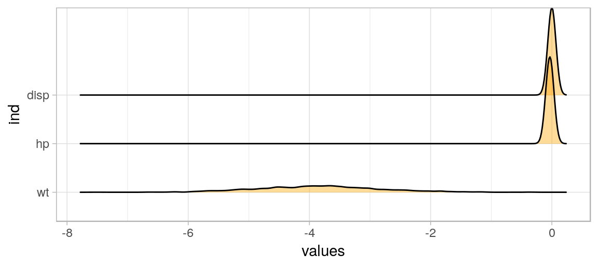
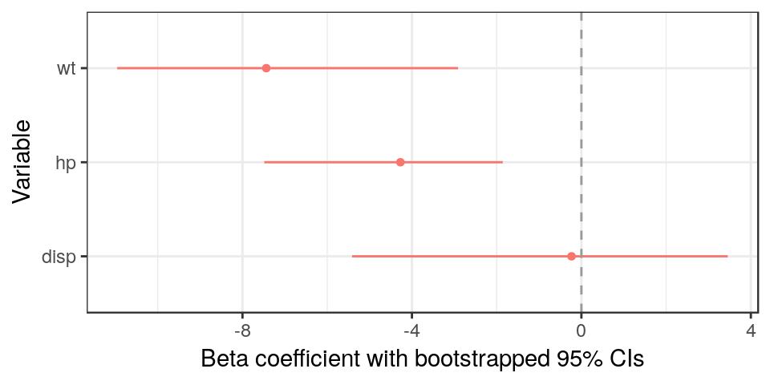

Introduction to boot


Bootstrapping
What is it?
- Calculating the statistic of interest on “bootstrap resamples” of data
- Resamples come by sampling with replacement many times
- Seeing Theory
What is the point?
- Estimate statistics when assumptions of parametric models may not hold
- Reduce distortions caused by small sample size
What’s the catch?
- Has its own assumptions:
- Sample is representative of population
- Samples are independent
Boot package
Basic function
Estimating the mean
# Setup
library(boot)
library(tidyverse)
get_mpg_mean <- function(data, indices){
# Function has to take in data and indices
new_data = data[indices,] # Resample based on indices
return(mean(new_data$mpg)) # Return statistic of interest
}
# Create the boot object
boot_obj = boot(data = mtcars,
statistic = get_mpg_mean,
R = 1000)
boot_obj
##
## ORDINARY NONPARAMETRIC BOOTSTRAP
##
##
## Call:
## boot(data = mtcars, statistic = get_mpg_mean, R = 1000)
##
##
## Bootstrap Statistics :
## original bias std. error
## t1* 20.09062 -0.09566875 1.029296Estimating the mean - visualization
boot_obj$t %>% as.tibble %>%
ggplot() +
geom_histogram(aes(x=V1), fill = 'orange',binwidth=.2) +
xlab('Mean weight in bootstrapped samples') +
theme_light()
Advanced example - bootstrapped confidence intervals for regression
- This should be easier!
Visualize bootstrapped coefficients
boot_df <- as.data.frame(boot_obj$t)
var_names = names(boot_obj$t0)
colnames(boot_df) <- var_names
library(ggridges)
boot_df %>% stack %>%
filter(ind != '(Intercept)') %>%
ggplot() + theme_light() +
geom_density_ridges(aes(x=values, y=ind), fill='orange', alpha=.4)
Calculate confidence intervals
## (Intercept) wt hp disp
## 2.5% 32.20399 -5.746330 -0.05780815 -0.01936283
## 97.5% 42.12750 -1.802503 -0.01598518 0.01668966cis <- sapply(1:length(var_names),
function(x) boot.ci(boot_obj,
index=x,
type = 'bca')$bca[4:5])
colnames(cis) <- var_names
print(cis)## (Intercept) wt hp disp
## [1,] 31.50074 -5.599185 -0.05458869 -0.02183948
## [2,] 41.60881 -1.487569 -0.01353307 0.01393642Use bootstrapped confidence intervals
library(dotwhisker)
library(broom)
tidy(lm(mpg ~ wt + hp + disp, data=mtcars), conf.int = T) %>%
mutate(conf.low = as.numeric(cis[1,]),
conf.high = as.numeric(cis[2,])) %>%
by_2sd(mtcars) %>%
dwplot(show_intercept = F) + theme_bw() +
theme(legend.position="none") +
xlab('Beta coefficient with bootstrapped 95% CIs') + ylab('Variable') +
geom_vline(xintercept = 0, colour = "grey60", linetype = 2) #